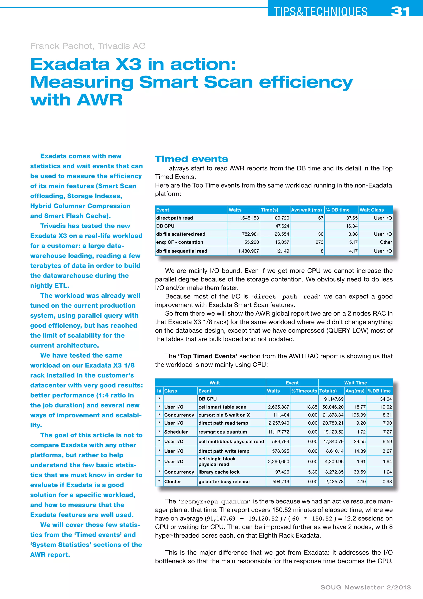
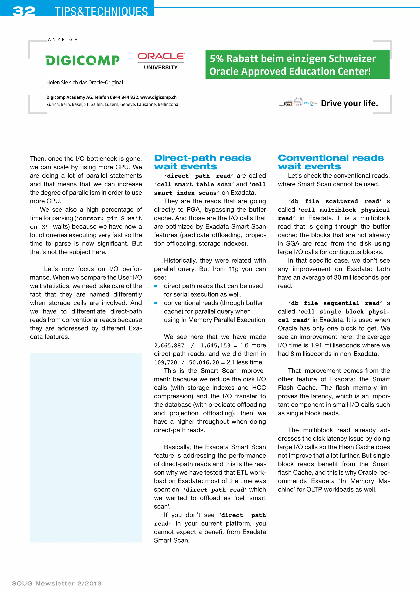
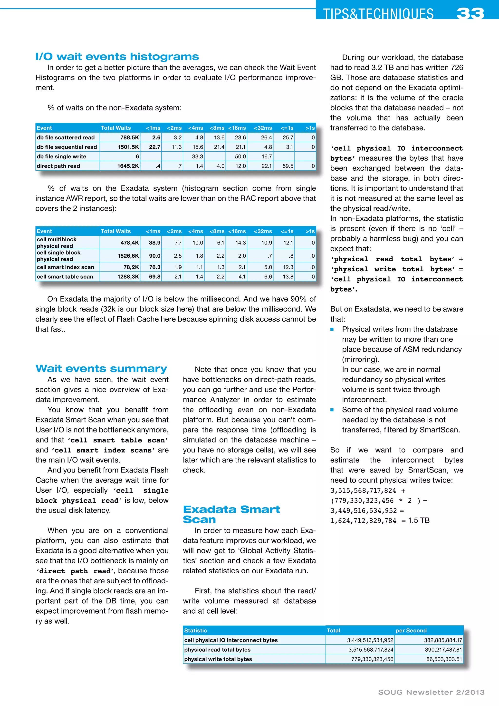
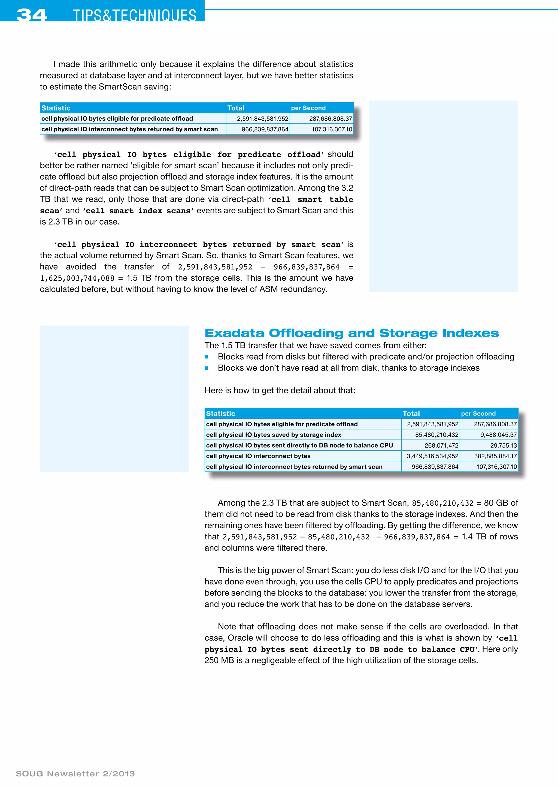
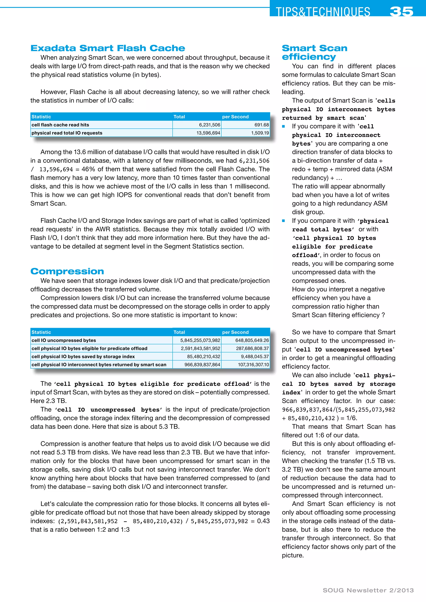
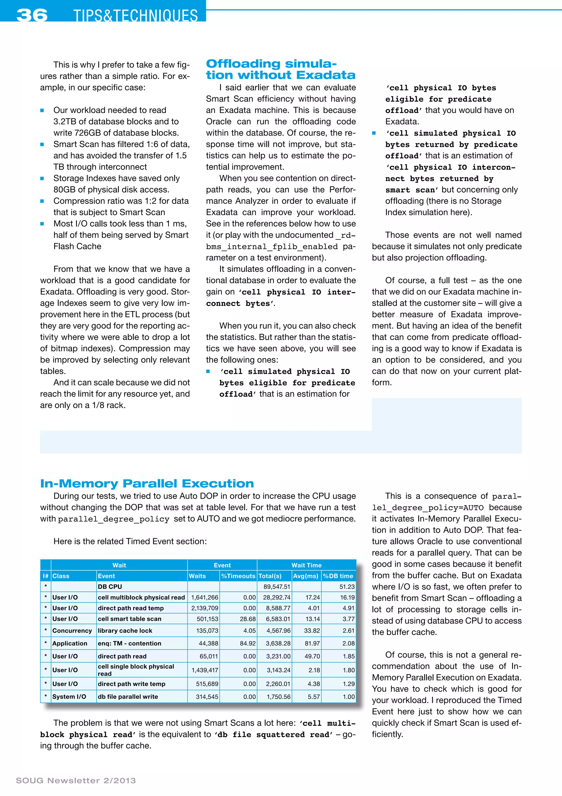
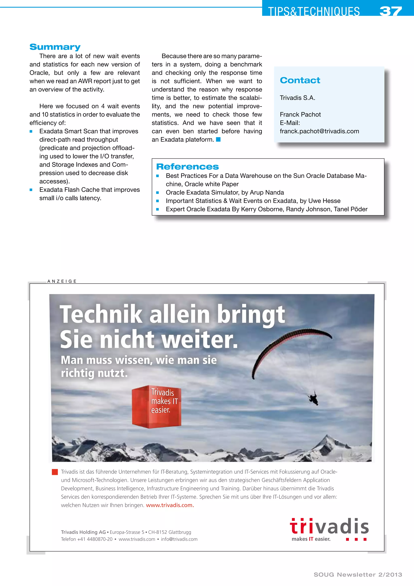

SOUG Newsletter 2/2013 · Franck Pachot
A seven-page field analysis of an Exadata X3 data-warehouse workload. AWR wait events and system statistics quantify Smart Scan predicate and projection offload, storage-index savings, compression, interconnect traffic, Smart Flash Cache latency, and simulated offload.






